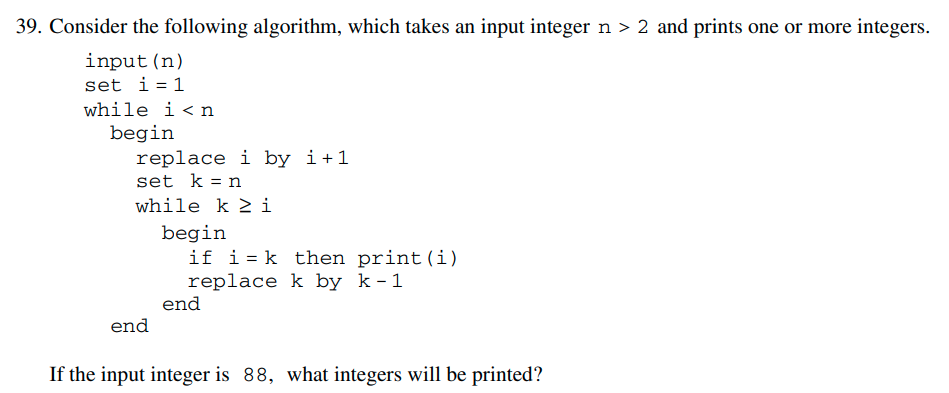
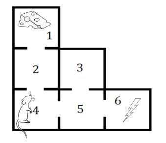

Functional Programming In Python
Sage Shaw - CU Boulder
Structure and Interpretation of Computer Programs (1986) (Lectures) (Book)
Goals
By the end of this talk you will...
- understand FP
- understand Python generators
- know when to use each
This is C code. When line 9 executes, what value is printed?
#include <stdio.h>
int main(){
int a, b;
a = 5;
goto *(&&LABEL + 7);
LABEL:
a = 1;
b = a;
printf("%d\n", b);
int* testLabel;
TEST: testLabel = &&TEST;
//TEST:printf("%ld\n", &&TEST - &&LABEL);
}
GOTO Considered Harmful - Edgar Dijkstra 1969
"For a number of years I have been familiar with the observation that the quality of programmers is a decreasing function of the density of GOTO statements in the programs they produce."
GOTO Considered Harmful - Edgar Dijkstra 1969
"The GOTO statement as it stands is just too primitive; it is too much an invitation to make a mess of one's program."
"GOTO Considered Harmful" Considered Harmful - Frank Rubin 1987
"To many people, 'structured programming' and 'GOTO-less programming' have become synonymous. This has caused incalculable harm to the field of programming, which has lost an efficacious tool. It is like butchers banning knives because workers sometimes cut themselves."
Structured Programming with GOTO Statements - Donald Knuth 1974
"The discussion brings out opposing points of view about whether or not GOTO statements should be abolished; some merit is found on both sides of this question. Finally, an attempt is made to define the true nature of structured programming, and to recommend fruitful directions for further study."
This is hard because of GOTO.
#include <stdio.h>
int main(){
int a, b;
a = 5;
goto *(&&LABEL + 7);
LABEL:
a = 1;
b = a;
printf("%d\n", b);
int* testLabel;
TEST: testLabel = &&TEST;
//TEST:printf("%ld\n", &&TEST - &&LABEL);
}Why is this hard?
This is from the Math Subject GRE practice book.
FP Commandment
Thou shalt not mutate!
The Unix Philosophy
A program (function) should do only one thing, and do it well.
The Lego Philosophy
Functions should be composable.
The Math Philosophy
Functions should be functions.
$f: A \to B$ such that $f(x) = \dots$
Newton's Method
$x \mapsto x - \frac{f(x)}{f'(x)}$
def newton_method(x0, f, df):
x = x0
print(x)
for _ in range(10):
x = x - f(x)/df(x)
print(x)
f = lambda x: (x-1)**2
df = lambda x: 2*(x-1)
newton_method(2, f, df)def newton_method(x0, f, df, max_iter=10):
x = x0
print(x)
for _ in range(max_iter):
x = x - f(x)/df(x)
print(x)
f = lambda x: (x-1)**2
df = lambda x: 2*(x-1)
newton_method(2, f, df, max_iter=4)def newton_method(x0, f, df,
max_iter=10, tol=1e-5):
x = x0
print(x)
for _ in range(max_iter):
x = x - f(x)/df(x)
print(x)
if abs(f(x)) <= tol:
break
f = lambda x: (x-1)**2
df = lambda x: 2*(x-1)
newton_method(2, f, df, tol=1e-3)def newton_method(x0, f, df, max_iter=10,
tol=1e-5, tol_type='abs'):
assert tol_type.lower() in ('abs', 'cauchy')
x = x0
x_old = x
print(x)
for _ in range(max_iter):
x, x_old = x - f(x)/df(x), x
print(x)
if tol_type is 'abs':
if abs(f(x)) <= tol:
break
elif tol_type is 'cauchy':
if abs(x - x_old) < tol:
break
f = lambda x: (x-1)**2
df = lambda x: 2*(x-1)
newton_method(2, f, df, tol=1e-3, tol_type='cauchy')def newton_method(x0, f, df,
max_iter=10, tol=1e-5,
tol_type='abs'):
assert tol_type.lower() in ('abs', 'cauchy')
x = x0
x_old = x
xs = [x]
for _ in range(max_iter):
x, x_old = x - f(x)/df(x), x
xs.append(x)
if tol_type is 'abs':
if abs(f(x)) <= tol:
break
elif tol_type is 'cauchy':
if abs(x - x_old) < tol:
break
return xs
f = lambda x: (x-1)**2
df = lambda x: 2*(x-1)
for x in newton_method(2, f, df,
tol=1e-3, tol_type='cauchy'):
print(x)def newton_method(x0, f, df,
max_iter=10, tol=1e-5,
tol_type='abs', return_all=False):
assert tol_type.lower() in ('abs', 'cauchy')
x = x0
x_old = x
if return_all:
xs = [x]
for _ in range(max_iter):
x, x_old = x - f(x)/df(x), x
if return_all:
xs.append(x)
if tol_type is 'abs':
if abs(f(x)) <= tol:
if return_all:
xs.append(x)
break
elif tol_type is 'cauchy':
if abs(x - x_old) < tol:
if return_all:
xs.append(x)
break
if return_all:
return xs
return x
f = lambda x: (x-1)**2
df = lambda x: 2*(x-1)
for x in newton_method(2, f, df, tol=1e-3,
tol_type='cauchy', return_all=True):
print(x)
print()
print(newton_method(2, f, df, tol=1e-3, tol_type='cauchy'))Let's try something more functional.
def example_generator():
yield 1
yield 2
yield 3
print(list(example_generator()))
my_gen = example_generator()
a = next(my_gen)
print(a)
for _ in range(4):
print(next(my_gen))[1, 2, 3]
1
2
3
---------------------------------------------------------------------------
StopIteration Traceback (most recent call last)
in
9 print(a)
10 for _ in range(4):
---> 11 print(next(my_gen))
StopIteration: def newton_sequence(x0, f, df):
x = x0
while True:
yield x
x -= f(x)/df(x)from itertools import *
from functools import *
import more_itertools #not built-inmax_iter
def take_10(iterable):
for _ in range(10):
yield next(iterable)
def take_n(iterable, n=10):
for _ in range(n):
yield next(iterable)
def filter_max_iter(max_iter=10**3):
def my_filter(seq):
return islice(seq, 0, max_iter)
return my_filter
x0 = 8
f = lambda x: (x-1)*(x-5)
df = lambda x: 2*x - 6
my_filter = filter_max_iter(4)
list(
my_filter(
newton_sequence(x0, f, df)))
>>>[8, 5.9, 5.139655172413793, 5.004557642613021]
def pipeline_eval(x, *func_list):
def apply(x, f):
return f(x)
return reduce(apply, func_list, x)
f = lambda x: x+1
g = lambda x: x**2
print(pipeline_eval(2, f, g))
print(pipeline_eval(2, g, f))
>>>9
>>>5
x0 = 8
f = lambda x: (x-1)*(x-5)
df = lambda x: 2*x - 6
pipeline_eval(newton_sequence(x0, f, df),
filter_max_iter(4),
list)
>>>[8, 5.9, 5.139655172413793, 5.004557642613021]
def filter_f_tol(f, tol=1e-10):
def predicate(x):
return abs(f(x) > tol)
return partial(takewhile, predicate)
x0 = 8
f = lambda x: (x-1)*(x-5)
df = lambda x: 2*x - 6
pipeline_eval(newton_sequence(x0, f, df),
filter_max_iter(20),
filter_f_tol(f, tol=1e-4),
list)
>>>[8, 5.9, 5.139655172413793, 5.004557642613021]
def distance(x1, x2):
return abs(x1 - x2)
def filter_cauchy_tol(distance=distance, tol=1e-10):
predicate = lambda tup: distance(*tup) > tol
my_filter = pipeline(collect_pairs,
partial(takewhile, predicate),
pairs_to_element)
return my_filter
x0 = 8
f = lambda x: (x-1)*(x-5)
df = lambda x: 2*x - 6
pipeline_eval(newton_sequence(x0, f, df),
filter_max_iter(20),
filter_cauchy_tol(tol=1e-2),
list)
>>>[8, 5.9, 5.139655172413793, 5.004557642613021]
def newton_root_find(x0, f, df,
max_iter=20, tol=1e-15):
return pipeline_eval(
newton_sequence(x0, f, df),
filter_f_tol(f = lambda x: abs(f(x)), tol=tol),
filter_max_iter(max_iter),
more_itertools.last)
newton_root_find(8, f, df)
>>>5.000000000006711
Reusability
def multi_newton_sequence(x0, jac, hes):
def muli_newton_improve(x):
return x - la.solve(hes(*x), jac(*x))
return iterate_seq(x0, muli_newton_improve)
def vec_dist(x, y):
return la.norm(x - y)
def multi_newton_root_find(x0, jac, hes):
return pipeline_eval(
muli_newton_sequence(x0, jac, hes),
filter_max_iter(max_iter=10),
filter_cauchy_tol(distance = vec_dist),
last)
Reusability
def secant_sequence(x0, x1, f):
yield x0
yield x1
while True:
x0, x1 = x1, x1 - f(x1)*(x1 - x0)/(f(x1) - f(x0))
yield x1
What's really going on?
filter_max_iter(max_iter=20)
filter_f_tol(f = lambda x: abs(f(x)))
filter_cauchy_tol(tol=1e-10)
identity = lambda x: x
Monoid: A set with a binary operation and an identity element.
Markov Simulation
Markov Class
state_space = [1,2,3,4,5,6]
P = sym.Matrix([
[0, 6, 0, 0, 0, 0],
[3, 0, 0, 3, 0, 0],
[0, 0, 0, 0, 6, 0],
[0, 3, 0, 0, 3, 0],
[0, 0, 2, 2, 0, 2],
[0, 0, 0, 0, 6, 0]])/6
markov = Markov(state_space, P)
pipeline_eval(markov.chain(4),
take(10),
list)
>>>[4, 2, 4, 2, 1, 2, 4, 2, 4, 5]
def until(condition, seq):
for element in seq:
yield element
if condition(element):
break
def seq_len(seq): return sum(1 for _ in seq)
def sub1(x): return x - 1
def trial():
return pipeline_eval(
markov.chain(4),
partial(until, lambda state: state in [1, 6]),
seq_len,
sub1) # count steps
N = 10**5
average = sum(trial() for _ in range(N))/N
>>>5.0182
Markov Simulation
def count_if(state):
return state == 6
def trial():
return pipeline_eval(
markov.chain(4),
partial(until, lambda state: state in [1]),
partial(map, count_if),
sum)
N = 10**5
average = sum(trial() for _ in range(N))/N
print(average)
>>>2.01536
Markov Simulation
def found_food(final_state):
return final_state == 1
def trial():
return pipeline_eval(
markov.chain(4),
partial(until, lambda state: state in [1, 6]),
last,
found_food)
N = 10**5
prob = sum(trial() for _ in range(N))/N
print(prob)
>>>0.49996
Is state necessary?

Image credit: Victor Zhou
def affine(wb_pair, x):
return wb_pair[0]@x + wb_pair[1]
def network_eval(weights_and_biases, x, f=np.tanh):
if len(weights_and_biases) == 0:
return x
else:
layer_output = f(affine(weights_and_biases[0],x))
return network_eval(weights_and_biases[1:],
layer_output, f=f)
$$ \text{cost}(W) = \int ||N(\mathbf{x}, W) - \mathbf{y}(\mathbf{x})||^2 \ d \mathbf{x} $$
def nn_gradient_sample(weights_and_biases, x, y, f, df,
cost_derivative):
return nn_gradient_recursion(
weights_and_biases,
x, y, f=f, df=df,
cost_derivative=cost_derivative)[1]
def nn_gradient_recursion(weights_and_biases, a, y, f, df,
cost_derivative):
if len(weights_and_biases) == 0:
return cost_derivative(a,y), ()
z = affine(weights_and_biases[0], a)
grad_a, grad_list = nn_gradient_recursion(
weights_and_biases[1:],
f(z), y, f=f, df=df)
delta = grad_a * df(z)
# W and b gradient for this layer
my_grad = (np.outer(delta, a), delta)
return (weights_and_biases[0][0].T@delta,
(my_grad,) + grad_list)
def nn_gradient(weights_and_biases,
input_data,
cost_derivative):
return sum(np.array(
nn_gradient_sample(weights_and_biases,
*data))
for data in input_data) / len(input_data)
def nn_stochastic_gradient_descent_sequence(params0,
batch_stream, learning_rate, cost_derivative):
def param_improve(params):
batch = next(batch_stream)
return params - learning_rate*nn_gradient(params,
batch, cost_derivative)
return iterate_seq(params0, param_improve)
xor_error_eval = partial(map, partial(batch_error,
data_xor))
errors = pipeline_eval(
nn_gradient_descent_sequence(
W0_B0,
data_xor,
learning_rate = learning_rate,
cost_derivative=cross_entropy_cost_derivative),
filter_max_iter(2000),
xor_error_eval)),
list)
Questions for the audience?
- Did you have fun?
- Did I pique your interest?
- Does functional programming have a place in your research?